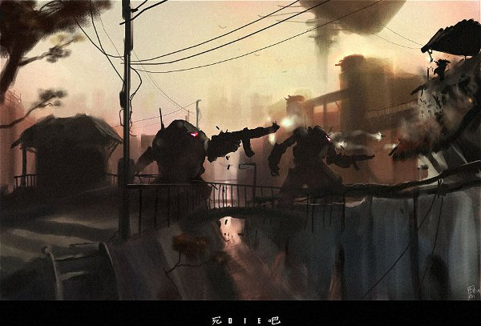
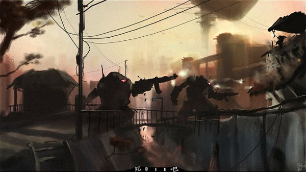
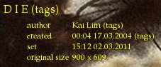

"...because no other tool seem to care"
"aura" tool is a desktop (X root window) background setter, capable of:
Intended usage is to point it to the path(s) with random image collection(s) and let it adjust any suitable ones to the current screen size. It has no gui and no capabilities to dowload images from anywhere.
Main process is actually very simple, to the extent that it's written in bash (which has negligible memory footprint), but the main magic is in the image processing part.
All the wallpaper-setters I've seen doesn't seem to consider this part important enough, focusing instead on providing GUI and image fetching mechanisms, but if you have a local collection and don't need guis, they're usually not much better than feh or ten-liner python script.
To see what I mean, let's take a simple case of a laptop screen (1366x768) and an image (960x660):
As you can see, image and screen aspect ratios don't match and the screen resolution is totally different (larger).
What all setters seem to do is either resize the image, crop it, or a combination of these.
Results, in this case, as you can probably guess, are not particulary good:
Each of the above has obvious flaws - it's either cropped, scaled in a weird way and/or has solid margins.
What this tool produces (automatically, from any random image, without any interaction), is this:
Click the images to see detailed versions, and note that details and their proportions are magically preserved by the grace of liblqr (liquid rescale implementation).
To see all the intermediate steps in more detail, let's get back to image one:
Obviously, image can be at least cropped out of solid margins (yet none of existing tools seem to care), but if you'll load it into GIMP and use autocrop, it won't really change anything, because (surprise!) margins are not solid at all: they usually have the noise or some minor texture, as a matter of fact, so you'd have to do the fuzzy-solid cropping, at least.And the tool does that, no problem. Actual technique I've used was to create a simple mask-layer, adjust it's contrast and use solid-crop feature to determine the cropped margins, then just use the same values on the original layer.
It certainly is better, but still in no way fits nicely to 16:9 screen with larger resolution, and this is the point where LQR (liquid resizing aka seam carving) algorithm comes into play.
LQR drops/scales the most featureless parts of an image, so all the important parts could be left untouched.
I highly recommend to spend a minute or two to skim over this YouTube video, showing what the algorithm is capable of and explaining how it does that. You'll probably never look at the usual Cubic and Sinc the same way again ;)
As you can see, black leftovers at the bottom magically disappeared, leaving the original label intact, which is a superior result than can be produced with simple matrix interpolations.
Since most of my images come from the sites like DeviantArt (I actually aggregate interesting (to me) channels from there to this feed), which make it easy to track authors, most time when I see really cool artwork, I like to know who made it and if there's more of such awesomeness (and there usually is!).
So a filename is a nice thing to see, at least. Author name could be there, you can maybe look up an image by it, if it really corresponds to image title in an obvious way.
But most images also come with an embedded tags, like EXIF or XMP, and all the info like author and title is there in the sane state, so these are used in the label if present in a file, overriding filename/mtime defaults:
Note that label color is a bit of PITA and not quite easy to get right reliably.
Tool calculates label size, takes the average color in the area where it'll be rendered and picks the most different (Delta E, CIEDE2000 algorithm) color from the predefined set of a brightest ones.
So far, results don't make me flinch in disgust at horribly-mangled images, but if there's a room for improvement, guess I'll spot it over time, and will certainly appreciate any suggestions, since I don't really work with graphics at all, and may not know even some basic concepts every artist and designer are probably aware of.
While "aura" script is pure bash, all image manipulations are performed from a python script ("lqr_wpset.py") using gimp's python-fu.
Thus, some stuff must be installed for the tool to work:
Everything aside from gimp-lqr-plugin is probably present in any decent desktop linux system.
Optional stuff (will be used if available):
These are probably best to get using the package manager, but colormath can be installed with a simple "easy_install colormath" or "pip colormath" command.
Actual "installation" is needed for the gimp plugin (lqr_wpset.py), which should be put into one of gimp plugin directories, like "~/.gimp-2.6/plug-ins/" and be marked as executable. Here's what I mean:
mkdir -p ~/.gimp-2.6/plug-ins/ cp lqr_wpset.py ~/.gimp-2.6/plug-ins/ chmod +x ~/.gimp-2.6/plug-ins/lqr_wpset.py
Bash script itself ("aura") will work from any path, just run it.
To quote the command itself:
~% aura -h Usage: aura paths... aura ( -d | --daemon ) [ --no-fork ] paths... aura [ -n | --next ] [ -b | --blacklist ] [ -k | --kill ] [ -h | --help ] Set background image, randomly selected from the specified paths. Optional --daemon flag starts instance in the background (unless --no-fork is also specified), and picks a new image every 10800s afterwards. Some options can be given instead of paths to control already-running instance (started with --daemon flag): --next cycle to then next background immediately. --blacklist add current background to blacklist (skip it from now on). --kill stop currently running instance. --help this text Various paths and parameters are specified in the beginning of this script.
...and mentioned "beginning of this script" is:
~% head -17 aura #!/bin/bash ## Options interval=$(( 3 * 3600 )) # 3h recheck=$(( 3600 )) # 1h activity_timeout=$(( 30 * 60 )) # 30min max_log_size=$(( 1024 * 1024 )) # 1M, current+last files are kept gimp_cmd="nice ionice -c3 gimp" wps_dir=~/.aura blacklist="$wps_dir"/blacklist log_err="$wps_dir"/picker.log log_hist="$wps_dir"/history.log log_curr="$wps_dir"/current pid="$wps_dir"/picker.pid
Also, see the beginning of a python plugin (lqr_wpset) for some image processing options:
max_aspect_diff = 0.5 # 16/9 - 4/3 = 0.444 max_smaller_diff = 2 # don't process images N times smaller by area (w*h) min_prescale_diff = 0.3 # use cubic on larger images (preserving aspect), then lqr label_offset = 10, 10 label_colors = [0]*3, [255]*3, (255, 0, 0),\ (0, 255, 0), (0, 0, 255), (255, 255, 0), (0, 255, 255) # most contrast one will be chosen font_filename = 'URW Palladio L Medium', 16 font_timestamp = 'URW Palladio L Medium', 11 tmp_dir = '/tmp'
Not that there should be any need to change this stuff, but if there is - it's just a shell/python.
I just put something like "aura -d ~/media/picz" into my ~/.xinitrc.
Artworks on this page ("D I E" and "AIR IN KYOTO" by Kai Lim) is a subject to a copyright and used with author's permission.
Code is a public domain, feel free to hack and reuse it as you see fit.
{kind=link}
{kind=link}
{kind=link}
{kind=link}
{kind=link}
{kind=link}
{kind=link}
{kind=link}
{kind=link}